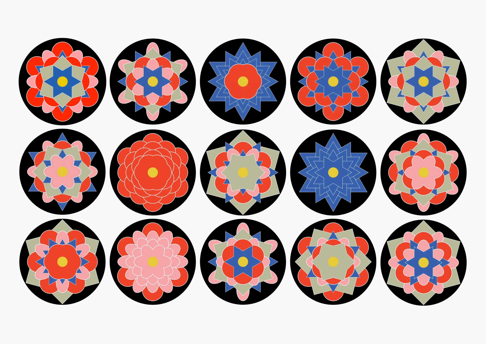
Shape of Days
ROLES
2025
SOLO PROJECT
ACADEMIC
problem
In this digital age, people record everything but remember very little. While 80% of people never revisit photos after the day they were taken, tools that capture context tend to lean either toward passive logging or intimidating open-ended writing, with very little in between.
The gap between lived experiences and how they ware remembered widens every time feelings go undocumented. This creates an opportunity for a tool that captures emotional context in a visually cohesive and accessible way.
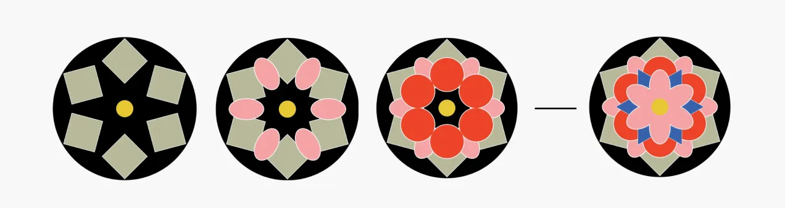
The project sparked from a conversation with a friend who described journaling as intimidating, and often became little more than schedules rather than reflection.

Research highlighted that this barrier affected far more people than I initially assumed. Many struggled to express emotions even in private spaces, making it difficult to preserve how they felt during significant moments. Over time, this can affect memory recall, even when visual cues such as photos and videos are available.
The challenge was not only how to capture emotional context, but how to lower the barrier to getting people started by turning reflection into an enjoyable, rewarding experience.
Research question
How might emotional reflection become intuitive and visually engaging without sacrificing depth?
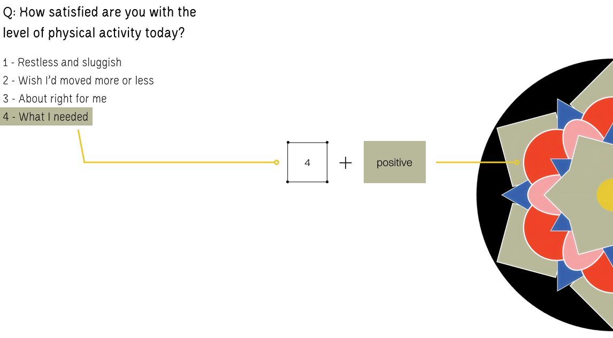
Design approach
This brings me to design approach to ensure the outcome addresses the pain points and answer the research question.
Reflection should feel safe, not exposed
Users should be able to document emotions without feeling vulnerable or pressured to reveal them.
Reflection should create personal meaning
The outcome should be meaningful to the creator without requiring explanation to anyone else, but visually cohesive enough to be perceived as is.
Reflection should be guided, not forced
The reflection should be supported with adequate structure to support reflection, while allowing users to interpret their experiences in their own way.
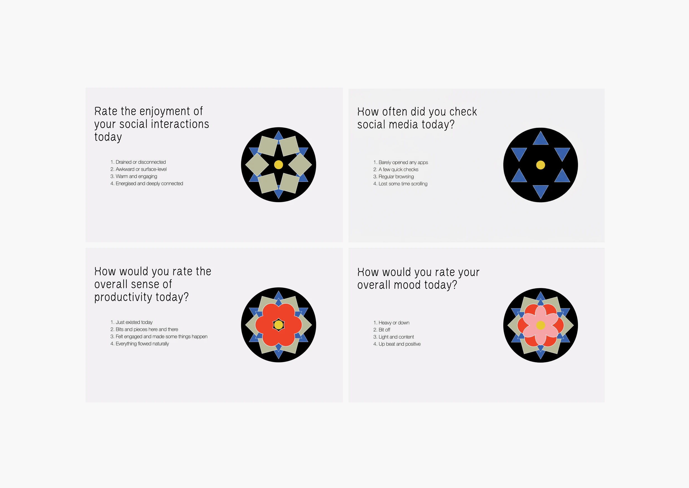
Shape of Days approaches reflection as a process rather than a prompt. Instead of asking users to describe their emotions directly, the system builds context incrementally through a sequence of guided question. Each answer contributes a layer to a growing visual outcome until a complete pattern emerges.
Rather than replacing traditional journaling, it acts as a stepping stone toward deeper and more sustainable reflection.
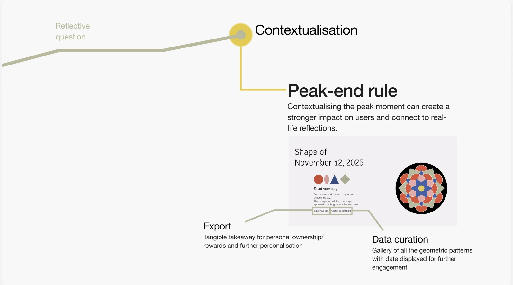
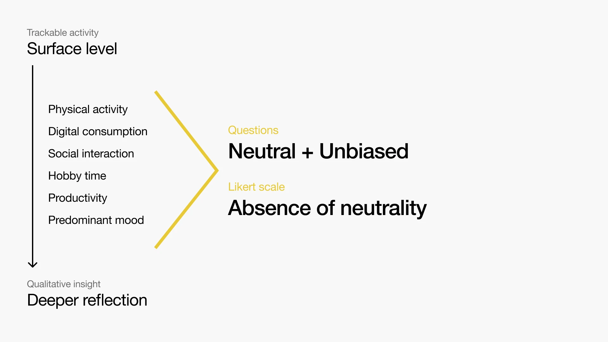
reflection system
The most critical design challenge was guiding users into emotional reflection without triggering the anxiety that often makes journaling feel overwhelming. For accessibility, I focused on areas that are relevant to daily life for everyone, easy to recall, and can be rated by intensity rather than quantity:
- Physical activity
- Digital consumption
- Social interaction
- Hobby time
- Productivity
- Predominant mood
During testing, most participants references answers from earlier prompts when determining their predominant mood. This suggested that the prompts functioned as interconnected steps rather than separate questions, helping users arrive at emotional reflection through recall.
Research also highlighted the importance of safety and confidentiality in self-reflection. While the flow helped users open up gradually, traditional rating scales created a disconnect in emotional language.
To address this, I adapted the Likert scale using more inclusive and neutral language while removing the traditional neutral midpoint. This encouraged participants to pause and consider their response more carefully.

Visual System
The visual system is heavily influenced by Dancheong, traditional Korean decorative painting found in architecture. As the project originated from a personal interest in memory and reflection, I wanted to incorporate an element of my own cultural background to anchor the experience.
The geometric floral motifs found in Dancheong originates from Buddhist mandalas, which symbolise harmony and wholeness.
Mandalas have also appeared in psychology as tools for self-reflection and self-expression. This connection provided both cultural grounding and a framework for transforming emotional data into a meaningful visual record.
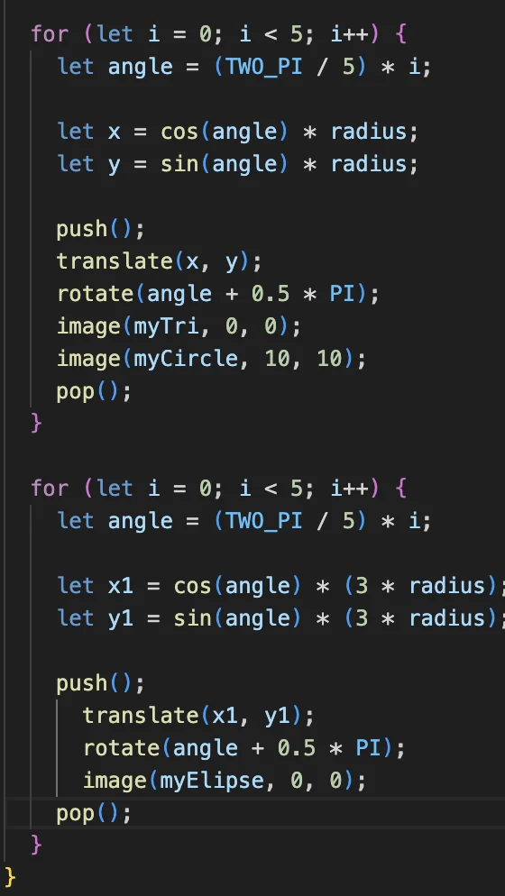
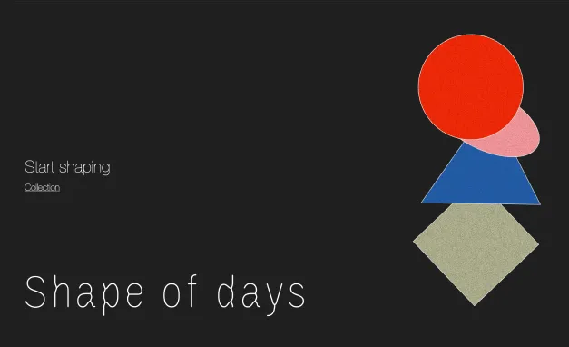
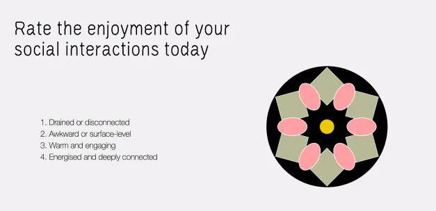
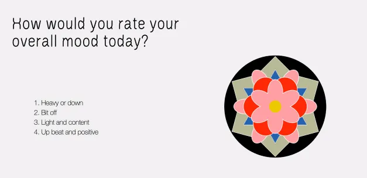
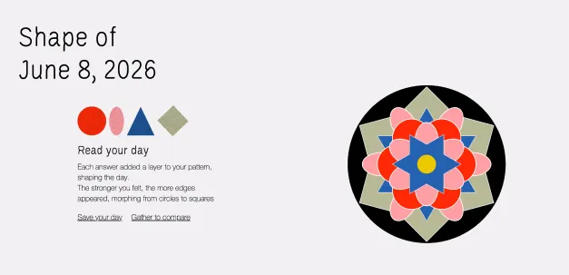
web experience
As users answer each prompt, they received an immediate visual feedback as a polygon layer gradually building a unified geometric pattern.
By the end of the sixth prompt, users are rewarded with a unique visualisation of their day.
The pattern can be saved to an online archive or downloaded and remixed with other personal artefacts for further contextualisation.